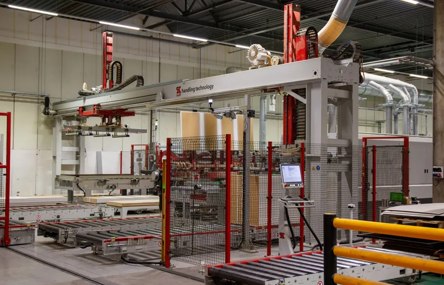
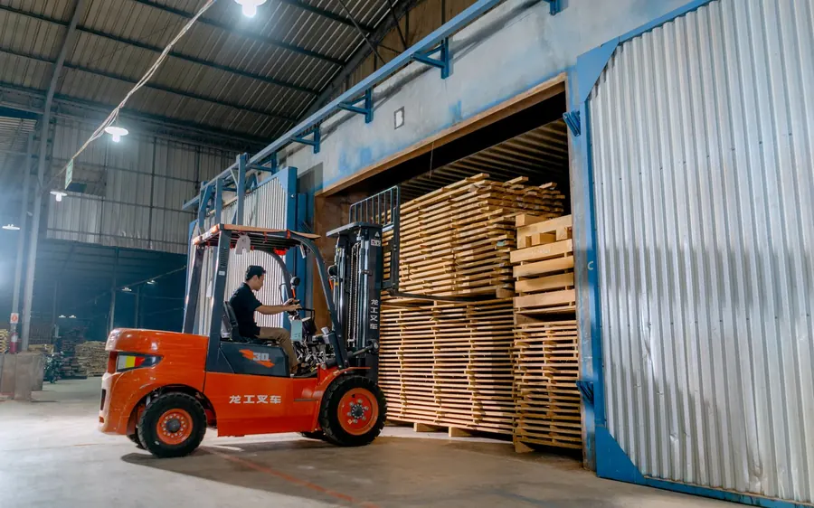
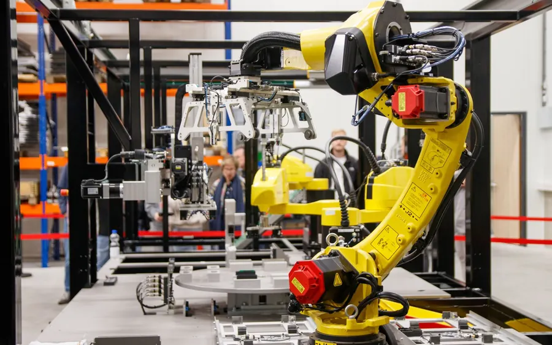

Manufacturing & Industrial
From shop floor to boardroom — AI that runs on operational reality.
- Production optimization
- Predictive maintenance
- Supply chain risk agents
From intelligent apps to governed deployments, one orbit connects every capability your enterprise needs — strategy, custom agents, AI-first engineering and governance.
Powering innovation together with
About AI Orbit
Our approach blends strategy, creativity and usability. Every engagement starts with the problem, the people and the business goals behind it — then we build custom agents, scale AI engineering and enforce governance until AI becomes a measurable win.
Services
Four service lines, one orbit. Pick where you are — we meet you there and take you to production.
Intelligent applications that don’t just automate — they reason. Production-ready, edge-case-tested agents that solve high-stakes business problems.
Code at the speed of thought. We embed specialist AI agents across your SDLC — your engineers own the architecture, compliance and every release.
Responsible AI isn’t a brake on innovation; it’s the seatbelt that lets you go faster. Guardrails, quality assurance, ethics and audit readiness.
Every successful AI project begins with the right questions — strategy, readiness, use-case prioritisation and the foundation for what comes next.
The impact
Helping organizations turn AI ideas into business results through strategy, governance and execution.
The agentic pipeline
Specialist agents hand off cleanly between six stages, with built-in self-healing. Select a stage to see what happens.
Auto-advancing — select any stage to take control
Client stories

ManufacturingA grounded assistant answers dealers in under a minute, with a source on every answer.
Modernization for a regulated pharmaceutical enterprise, with zero downtime.
Complex COBOL tax engines transformed into validated, modern services.

ManufacturingReal-time analysis and visual insights on production data, in plain language.
Industries
Industry-specific AI that understands your regulations, your workflows and your competitive pressures.

From shop floor to boardroom — AI that runs on operational reality.
Built for audit, scale and scrutiny.
Decades of unstructured history, turned into operational decisions.
Knowledge hub
Knowledge paper
Just-in-time software engineering through agentic AI — and what it means for how teams are organised.
Read the paperKnowledge paper
Role convergence in the AI SDLC (ADLC)Efficient, governed convergence through a layered skill architecture.Article
See the system: why AI projects fail when you map the symptomEvery AI-native build must map the full system before a solution is designed.Article
Deconstruct: stage 1 of first-principles deliveryHow six questions turned a $680,000 routing contract into an $8.3 million finding.
Build · Modernize · Govern
Whether you’re building, modernizing or governing, AI Orbit brings structure, speed and safety to every stage of your AI journey.
Launch your AI journeyContact
We’ll show you exactly how AI Orbit solves it — with a scoped proposal, a realistic timeline and references from clients in your sector. No pitch decks, no vague “AI transformation” talk.